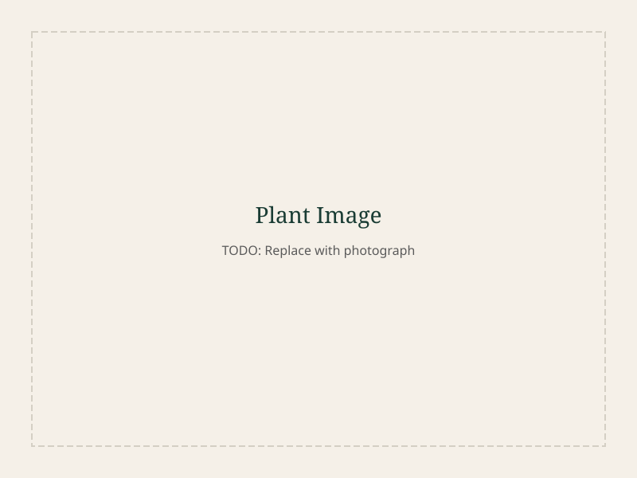

EBI Internship Programme
Internship Work
Documentation of activities during the internship at EBI Shashemene Biodiversity Garden.
About This Internship
Student internship at the Ethiopian Biodiversity Institute's Shashemene Biodiversity Garden, documenting botanical activities and supporting garden operations.
This internship was conducted at the Shashemene Biodiversity Garden under the Ethiopian Biodiversity Institute (EBI). The work focused on practical botanical garden operations, plant documentation, and supporting conservation activities.
The documentation here represents real activities carried out during the internship period. Images are organized by activity type based on the actual work performed.
Activity
Shashemene Biodiversity Garden
Overview of the garden site, layout, and daily operations.

The Shashemene Biodiversity Garden is the primary site for the EBI internship programme. Located in the Bale-Shashemene highlands, the garden serves as a conservation and research facility for native Ethiopian plant species.
Daily activities included garden maintenance, plant monitoring, and assisting with visitor education about the garden's collections.
Activity
Medicinal Plant Documentation
Recording medicinal plants with trilingual nomenclature and traditional use descriptions.
Medicinal plant documentation involves identifying, photographing, and recording plant species with known traditional medicinal uses. Each specimen is documented with its scientific name, Afaan Oromo name, Amharic name (Ge'ez script), and English common name.
Traditional use descriptions are recorded through interviews with community knowledge-holders following informed consent protocols.
Activity
Plant Care & Potting
Preparing potting media, transplanting seedlings, and nursery management.
Plant care activities include preparing potting mixtures appropriate for different species, transplanting seedlings into larger containers, and maintaining proper watering schedules.
Detailed notes are taken on growth conditions, media composition, and plant responses to inform future propagation protocols.
Activity
Indigenous Plant Site Documentation
Documenting native plant species in their natural habitat.
Field visits to indigenous plant sites document species in their natural ecological context. This includes recording GPS coordinates, associated species, habitat conditions, and any visible threats to the populations.
Activity
Vermicompost Production
Preparing and managing vermicompost for organic soil enrichment.
Vermicompost production uses earthworms to decompose organic waste into nutrient-rich compost. This activity supports the garden's organic cultivation practices by providing a sustainable soil amendment.
The process involves preparing bedding material, maintaining proper moisture and temperature, and harvesting the finished vermicompost for use in the nursery.
Activity
Study & Learning
Educational activities, species identification practice, and field guide reference.
Regular study sessions using field guides and reference materials are essential for accurate species identification. This includes reviewing botanical terminology, learning diagnostic features of plant families, and practicing with herbarium specimens.
Activity
Landscape & Water Resources
Documenting the surrounding landscape and water resources near the garden.
The Melka Oda River is an important water resource for the Shashemene area. Documenting the river and surrounding landscape provides context for the garden's water management and the broader ecological setting of the biodiversity garden.
Activity
Supervision & Mentorship
Working under the guidance of EBI supervisors and garden staff.
Supervisor Jemal provided daily guidance on garden operations, plant identification, and proper documentation techniques. This mentorship was central to the internship learning experience.
Activity
Intern at Work
Documentation of the intern performing various garden tasks.
These images document the intern performing various tasks throughout the garden — from plant care and documentation to compost management and site maintenance.